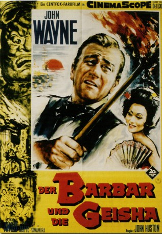
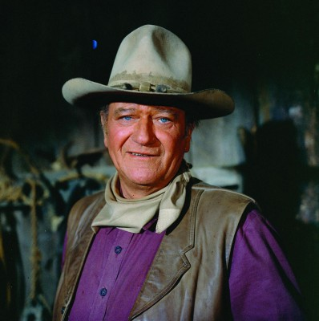

#11626 Der Barbar und die Geisha
Alternativ: The Barbarian and the Geisha (Englischer Titel)
 
 IMDB-Wertung: 5.6 / 10
IMDB-Wertung: 5.6 / 10  Metascore: 0
Metascore: 0 
1856 reist der amerikanische Diplomat Townsend Harris als US-Gesandter nach Japan, um mit der Regierung ein Handelsabkommen zu schließen. Seine Mission erweist sich als schwierig, da die Bewohner und die politisch Verantwortlichen dem "Barbaren" feindlich gesinnt sind. Die junge, schöne Geisha Okichi wird als Spionin auf ihn angesetzt und verliebt sich in Harris.
Jahr: 1958
Dauer: 104 Minuten
FSK: 6
Land: USA Studio: Twentieth Century FoxTonspuren:
Untertitel: Deutsch,
Auflösung: 1080p (1920x816) Größe: 8960 MB
Genre: Drama, Abenteuer, Liebe, Geschichte
Regisseur:  John Huston
John Huston
Drehbuch: Charles Grayson, Ellis St. Joseph, Nigel Balchin, James Edward Grant, Alfred Hayes
Soundtrack: Hugo Friedhofer
Darsteller:
-  John Wayne als Townsend Harris
- Eiko Ando als Okichi
- Sam Jaffe als Henry Heusken
- Sô Yamamura als Governor Tamura
- Ryuzo Demura als Thug (uncredited)
- Kodayû Ichikawa als Daimyo (uncredited)
- Tokujiro Iketaniuchi als Harusha (uncredited)
- Fuji Kasai als Lord Hotta (uncredited)
- Takeshi Kumagai als Chamberlain (uncredited)
- Fuyukichi Maki als Peasant (uncredited)
- Morita als Prime Minister (uncredited)
- James Robbins als Lt. Fisher (uncredited)
- Norman Earl Thomson als Captain Edmunds (uncredited)
- Hiroshi Yamato als The Shogun (uncredited)
Datei: X:\1950-1959\Barbar und die Geisha, Der (1958, FSK6, 1920x816).mkv seit 13.08.2019
Festplatte: Gemischt-01+Anime
 Es gibt insgesamt 141 Filme in der Gruppe '1950-1959'
Es gibt insgesamt 141 Filme in der Gruppe '1950-1959'